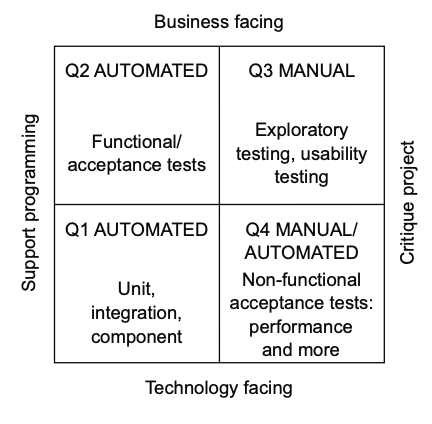
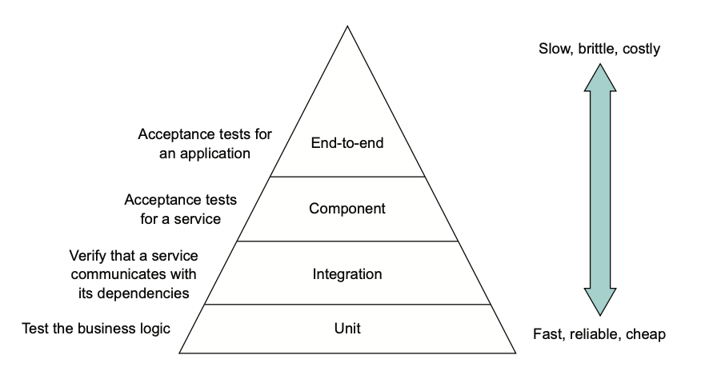

🏄🏼♀️ Test Quadrant & Test Pyramid
Тест кейс (test case) - набор входящих данных, условий выполнения программы и ожидаемых результатов, который позволяет подтвердить корректную работу тустируемогй функциональности.
Тест сьют (test suite) - выборка связанных тест-кейсов.
Фазы почти любого автоматизированного теста:
- Set up
- Выполнение
- Сравнение с ожидаемым результатом
- Clean up
-> Типы тестов:
- Юнит тесты - самые small тесты для тестирования конкретных частей кода (e.g. класс, функция)
- Интеграционные тесты - тесты, проверяющие взаимодействие с БД, внешними сервисами
- Компонентные тесты - приемочные тесты индивидуального сервиса
- End-to-end тесты - приемочные тесты всего приложения целиком
Посмотрим на 2 принятых варианта категоризации тестов:
Test Quadrant
Две оси:
- Тест технический или бизнесовый?
- Тест поддерживает разработку или ищет новые проблемы в приложении?

Вот такие вот Q1, Q2, Q3 и Q4.
Test Pyramid

Чем больше скоуп теста, тем он сложнее и дольше выполняется. Как правило, величина скоупа так же прямо влияет и на устойчивость теста: чем больше он затрагивает изменющихся частей системы, тем больше вероятность, что он станет нестабильным и будет проигнорирован.
В теории, поднимаясь к верху пирамиды, количество тестов становится все меньше и меньше.
❗Stub / mock
И то, и другое - заглушки. В чем разница?
Стаб - возвращает заранее определенные данные. Не имеет логики или поведения.
Мок - заглушка, подменяющая реальный компонент с сохранением возможности отслеживать поведение - можно проверять, как и именно и сколько раз к нему обращались и т.д.